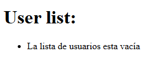
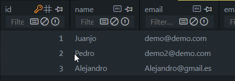
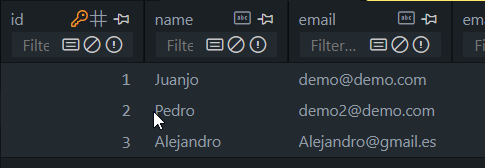

4. Controladores
1. Introducción
Anteriormente, hemos trabajado vistas, modelos y migraciones, es hora de completar el MVC con los controladores.

Vemos diferentes herramientas para acceso a datos, como a través del ORM eloquent, a través de SQL y sistemas mixtos..
El objetivo es comprender todo el sistema completo.
Veremos rutas y parametros dinámicos
Creación proyecto Controller
Para ello nos quedaremos en nuestra ruta del proyecto, en neustro caso será la ruta 605_GOGODEV/4_Controladores, dentro de esa ruta abrimos la consola de comandos y creamos un nuevo proyecto laravel mejor con composer para que no muestre diversas opciones con:
composer create proyect laravel/laravel controllers
cd controllers
Como sabemos, la opción laravel new nos ofrece starter kit, opciones para las bases de datos...
laravel new controllers >> cd controllers
2. Vinculación Ruta-Controlador-Vista
2.1 Configuración inicial
2.1.1 Configurar acceso a nueva base de datos
A continuación vinculamos una base de datos nueva para configurar el circuito, para eso tenemos que modificar el archivo .env para que acceda a una nueva base de datos, en mi caso va a ser una base de datos mariadb:
Esto es en el caso de que queramos usar mysql/mariadb
Con SQLITE no es necesario.
A continuación en el .env establecemos los valores de conexión para poder conectarnos
controllers/.env
DB_CONNECTION=mysql
DB_HOST=127.0.0.1
DB_PORT=3306
DB_DATABASE=controllers
DB_USERNAME=root
DB_PASSWORD=root
2.1.2 Modelado de datos
Para ello nos vamos a ir a la tabla que se encuentra en 4_Controladores\controllers\database\migrations\0001_01_01_000000_create_users_table.php y una vez ahí añadimos algunos datos a la tabla:
public function up(): void
{
Schema::create('users', function (Blueprint $table) {
$table->id();
$table->string('name');
$table->string('email')->unique();
$table->timestamp('email_verified_at')->nullable();
$table->string('password');
$table->unsignedInteger('age')-> default(18);
$table->string('address')-> nullable();
$table->unsignedBigInteger('zip_code')-> nullable();
$table->rememberToken();
$table->timestamps();
});
}
A continuación repasamos nuestro modelo y añadimos los nuevos elementos, el modelo se encuentra en 4_Controladores\controllers\app\Models\User.php y lo modificamos de tal manera que el $fillable nos quede tal que así:

protected $fillable = [
'name',
'email',
'password',
'age',
'address',
'zip_code'
];
Si nos fijamos hay otros datos del modelo que NO aparecen en el fillable porque son automáticos y no son cumplimentables, como el ID y, además, hay algunos hidden y otros que definen el cast

2.1.3 Migración de contenido
Para realizar la migración de contenidos desde la consola de comandos ponemos:
php artisan migrate:refresh
Ya que en la creación del proyecto ya hacía una primera migración y nosotros hemos modificado la tabla users.
php artisan migrate
2.2 Creación y configuración del controlador
Recordamos el flujo MVC:
- El usuario va a escribir una ruta
- Esa ruta va a tener un controlador asociado
- El controlador va a recuperar los datos del modelo
- Y se los va a ofrecer:
- A una vista
- A una API
- Para que esa info se muestre
Vamos a cerrar el circuito anterior.
Ruta web.php
Antes en la ruta web, hacíamos uso de la clase Route::view, a partir de ahora usaremos el controlador de cada Modelo para poder recuperar los datos,
por ejemplo, en el índice vamos a mostrar todos los usuarios del sistema.:
Creamos controlador
Para poder seguir con nuestro punto necesitamos crear un controlador, deberíamos de crear un controlador para cada caso y no usar un mismo controlador que se ocupe de todo como por lo que para crear el UserController necesitaremos desde la consola de comandos poner:
php artisan make:controller UserController
INFO Controller [C:\xampp\htdocs\dwes\...controllers\app\Http\Controllers\UserController.php] created successfully.
Cada vez que creamos un controlador, este es una clase que está heredando una clase base que contiene todos los métodos, propiedades y acciones que caracterizan a ese elemento, en nuestro caso se encuentra en la clase Controller situada en:
4_Controladores\controllers\app\Http\Controllers\Controller
Por ahora, vamos a pensar en un controlador por cada recurso, aunque hay diferentes opciones.
Convención ModelController
Va con el nombre del modelo y la palabra Controller en singular e inglés.
Clase UserController extiende de Controller

Aquí definimos funciones públicas para controlar una vista.
Index va a controlar nuestra primera vista
2.2.1 Vinculación Ruta-Controlador
Dentro de nuestro controlador definimos funciones públicas:
class UserController extends Controller
{
//
public function index(){
dd("Hello World");
}
}
A continuación accedemos a nuestro archivo de rutas el cual se encuentra en:
4_Controladores\controllers\routes\web
Dentro de este archivo de rutas hacemos la asociación del raiz con nuestro controlador así como sus debidos imports:
<?php
use Illuminate\Support\Facades\Route;
use App\Http\Controllers\UserController;
Route::get('/', [UserController::class, 'index'])->name('user.index');
Si ahora accedemos a nuestro proyecto nos aparecerá el texto de Hello World que se encuentra en nuestro UserController y se llama desde la ruta de nuestro archivo web
Usamos Use para importar el controlador
- Hemos usado el get sencillo sin autenticación que se vincula a un controlador
- Especificamos UserController:class que es el método mágico, y como segundo parámetro, la función index
- nombramos la ruta como user.index, ya que es ventajoso.
si hacemos un php artisan serve veremos:

Siguiente paso, vinculamos controlador con vista y después, haremos que el controlador utilice datos.
2.2.2 Vinculación Controlador-Vista
Para vincular el controlador con la vista lo que tenemos que hacer es desde views creamos un nuevo directorio el cual va a ser el siguiente:
App\resources\user\index.blade.php
Una vez hecho esto vamos a incluir dentro de este archivo el contenido que vamos a querer mostrar en nuestra página:
<!DOCTYPE html>
<html lang="en">
<head>
<meta charset="UTF-8">
<meta name="viewport" content="width=device-width, initial-scale=1.0">
<meta http-equiv="X-UA-Compatible" content="ie=edge">
<title>Document</title>
</head>
<body>
<h1>Hello World</h1>
</body>
</html>
Dentro de nuestro UserController.php en nuestra función index devolvemos la vista que vamos a mostrar y quitamos la función dd(Hello):
Ahora tenemos que retornar una vista, que siempre parte desde la carpeta views
public function index(){
return view('user.index');
}
Y si probamos a entrar al nevegador veremos que nos aparecerá el Hello world del ìndex.blade.php
Para lo que levantamos el servicio. Nuestra ruta ejecuta controlador y este, ejecuta la vista.

El siguiente paso será añadir acciones contra los modelos para, por ejemplo, pintar el listadoo de usuarios.
3. Consultas a modelos, paso de información y pintado (23.33)
En este punto vamos a aprender a recuperar datos de nuestros modelos, en nuestro caso vamos a utilizar nuestro modelo user.php, para ello vamosa importarlo desde nuestro UserController.php:
Vamos a apoyarnos en el ORM
use App\Models\User;
Una vez incluido debemos de obtener los elementos de usuario desde la función index, todo esto antes de devolver las vistas, para ello lo haremos de la sigueinte manera:
Nos apoyaremos en algunso métodos estáticos como es all para esta labor.
Eloquent es un patrón de diseño que se basa en active record para describir lo que queremos leer/escribir en la base de datos.
public function index(){
$users = User::all();
// dd("Hello World");
//como segundo parámetro se le pasa un array con los datos que se quieren pasar a la vista
//Se puede hacer de la siguiente manera
// return view('user.index', ['users' => $users]);
//pero cuando la clave y el valor son iguales se puede SIMPLIFICAR con compact de la siguiente manera
return view('user.index', compact('users'));
//return view('user.index');
}

Ahora en la vista podemos utilizar esos datos para pintarlos utilizando la directiva @foreach donde indicamos que para cada usuario pintamos un li con algún dato del usuario:
<h1>User list:</h1>
<ul>
@foreach($users as $user)
<li>{{$user->name}}</li>
@endforeach
</ul>
Obviamente no pinta ningún tipo de dato ya que no existe ningún tipo de registro en nuestra base de datos
Las directivas iterativas como foreach nos permiten recorrer una estructura, mientras que las selectivas nos permiten pintar o no cierta información en función de si se cumple alguna condición(@if, @switch, @else, @case...)
Vamos a a añadirle al codigo anterior un condicionante @if que nos indique cuando la lista esta vacía:
<body>
<h1>User list:</h1>
<!--Si la condición isEmpty() se cumple nos muestra el mensaje-->
@if($users->isEmpty())
<p>La lista de usuarios esta vacía</p>
@else
<ul>
@foreach($users as $user)
<li>{{$user->name}}</li>
@endforeach
</ul>
@endif
</body>
O de forma mas legible:
<body>
<h1>User list:</h1>
<ul>
@forelse($users as $user)
<li>{{$user->name}}</li>
@empty
<li>La lista de usuarios esta vacía</li>
@endforelse
</ul>
</body>

4. Inserción de datos
A continuación vamos a introducir unos datos de prueba para ver que todo funciona correctamente, para ello vamos a generar un sistema para cumplimentar con datos de prueba nuestro contenido, no es el procedimiento habitual pero en este caso nos va a venir bien para aprender.
- Lo suyo será acudir a un seeder, o factory o faker, pero lo veremos adelante
Vamos a crear una nueva ruta dentro de web.php:
Route::get('/create', [UserController::class, 'create'])->name('user.create');
A continuación vamos a crear el método create:
Crearemos algunos datos de prueba
public function create(){
$user = new User;
$user-> name = "Ramón";
$user-> email = "ramon@hotmail.com";
$user-> password = Hash::make('1234');
$user-> age = 23;
$user-> address = "Calle Consolación 34";
$user-> zip_code = 14114;
$user->save();//Con save guardamos el dato en la base de datos
}
La forma anterior no es la única forma, podríamos hacer uso de User:create de la siguiente manera:
O podemos ahorrarnos pasos como el guardado y la necesitdad de poner $user utilizando User::create([*DATOS DEL USUARIO])***:
public function create(){
User::create([
"name" => "Jose",
"email" => "jose@gmail.org",
"password"=> Hash::make('1234'),
"age"=> 42,
"address"=> "Calle Martinez50",
"zip_code" => 15151515
]);
User::create([
"name" => "Alejandro",
"email" => "Alejandro@gmail.es",
"password"=> Hash::make('1234'),
"age"=> 34,
"address"=> "Calle Carreteros 8",
"zip_code" => 151515
]);
}
Una vez creados los usuarios queremos que se nos redirija al contenido de index en el que vamos a tener nuestra vista:
No usar URL absolutas, porque si cambiamos el nombre de la ruta, tendríamos que cambiar todas las referencias a esa ruta
return redirect() -> route('user.index');
Y si ya accedemos a la página nos mostrará los usuarios creados
Debemos de acceder añadiendo la ruta /create en el buscador
Debido a que tenemos un sistema de persistencia ahora cada vez que acudamos a nuestra página ya nos aparecerán los usuarios
¿Qué va a ocurrir cuando nos dirijamos a http://127.0.0.1:8000/create?
- Va a seguir por la ruta al UserController función create
- Crea tres usuarios
- redirige al index que muestra esos usuarios.
 

5. Eloquent
En este punto vamos a realizar consultas con Eloquent para consultar más complejas, hasta ahora nos hemos traído todos los datos.
Podemos realizar consultas más complejas en la que vayamos poniendo condicionantes para que la búsqueda por ejemplo de un usuario sea más exacta, por ejemplo así:
public function index(){
$users = User::where('age', '>=', 18)->where('zip_code', 151515)->orWhere('zip_code', 141414);
return view('user.index', compact('users'));
}
Una vez establezcamos todas las condiciones debemos de ponerle un get() para obtener los resultados de la consulta:
public function index(){
$users = User::where('age', '>=', 18)->
where('zip_code', 151515)->
orWhere('zip_code', 141414)->
get();
return view('user.index', compact('users'));
}
También podemos ordenar los resultados que nos vaya a dar la consulta, para eso usaremos el orderBy() en mi caso voy a ordenar por edad ascendente:
public function index(){
$users = User::where('age', '>=', 18)->
where('zip_code', 151515)->//Condición Where normal
orWhere('zip_code', 141414)->//Se cumple una condición o la otra
orderBy('age', 'asc')->//Ordena la edad en ascendente
get();//Obtiene los resultados de la consulta
return view('user.index', compact('users'));
}
Si ahora queremos ver la información de la edad para comprobarla, pues nos iremos a nuestra vista index.blade.php y desde ahí le diremos que la pinte:
<ul>
@forelse($users as $user)
<li>{{$user->name}} -- Edad: {{$user->age}} años</li>
@empty
<li>La lista de usuarios esta vacía</li>
@endforelse
</ul>

También podemos especificar límites dentro de nuestros resultados usando limit():
public function index(){
$users = User::where('age', '>=', 18)->
where('zip_code', 151515)->//Condición Where normal
orWhere('zip_code', 141414)->//Se cumple una condición o la otra
orderBy('age', 'asc')->//Ordena la edad en ascendente
limit(1)->//Solo nos devolvería 1
get();//Obtiene los resultados de la consulta
return view('user.index', compact('users'));
}
- Hay muchos más métodos que veremos poco a poco,
- como first() en lugar de get, que obtiene el primer resultado de la consulta
- offset para el limit, que se salta el número que le digas para las paginaciones
- Podemos usar find() en el caso qeu queramos buscar un usuario, por ejemplo por el ID.
$users = User::find([1,2]);//Busca los usuarios con id 1 y 2
En ningún sitio hemos tenido que realizar una estructura SQL todas las consultas las hemos hecho a través de los métodos estáticos. Es el motor ORM de Eloquent el que se encarga de realizar la traducción a consultas para nuestra base de datos independientemente de nuestro sistema de base de datos, esto hace que nos mantengamos al margen de nuestro sistema de persistencia.
- Ventaja de eloquent, trabajamos con POO
Eloquent también tiene desventajas como por ejemplo:
- Nuestra lógica de negocio es totalmente dependiente de Laravel, no podríamos extraerla
- No controlamos la eficiencia de las consultas
6. SQL RAW (1:11)
Vamos a realizar las consultas sin apoyarnos en el ORM para poder utilizar consultas SQL, para ello vamos a apoyarnos en la clase DB que nos permite realizar consultas, funciona de la sigueinte manera:
public function index(){
//$users = DB::select(DB::raw("SELECT * FROM users")); daba error $users = DB::select('select * from users');
//https://laravel.com/docs/11.x/database
return view('user.index', compact('users'));
}
La consulta de antes ha sido para obtener a los usuarios, ahora vamos a hacer una para crear un usuario:
public function create(){
DB::insert(DB::raw('INSERT INTO user VALUE ...'));
}
Ventajas de este formato
- Control total de las consultas
- Este formato nos permite ser más detallistas
- Bajo acoplamiento a Laravel
Desventajas de este formato
- Hay que ir mirando nuestra tabla SQL a ver si es compatible con nuestra base de datos
- Abandono de la programación orientada a objetos
En este MVC vamos a recorrer siempre a nuestro ORM de Eloquent.
El ORM se puede modificar, según como nos interese su patrón de diseño un ejemplo puede ser por ejemplo Doctrine
Un método mixto: DB
$users = DB::table('users')->select();
Conclusiones
rutas
Recuerda: Cuando comentemos algún archivo, siempre es bueno indicar la ruta
Lo más importante en el patrón MVC es trabajar con el ORM en este caso Eloquent.
En la clase siguiente vemos cómo todo lo anterior funciona de forma coordinada para crear un CRUD, lo que será de base para futuras características.
- Antes para afianzar: Practicar, practicar, practicar. Lo hacemos en nuestro proyecto FPDual